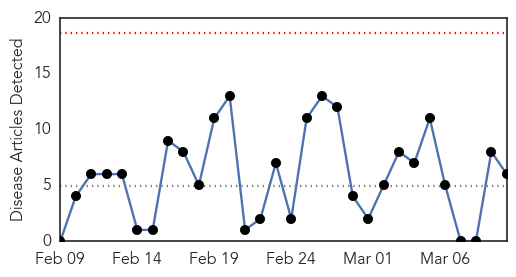
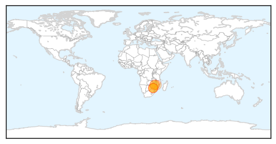
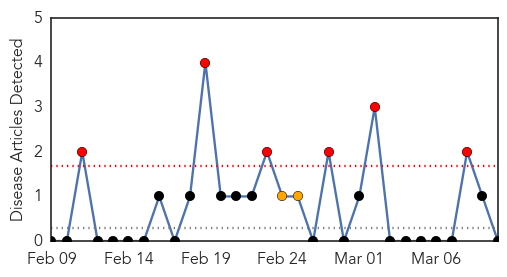

Cholera
30-Day Web Trend
0 alerts, 0 warnings

30-Day Twitter Trend
8 alerts, 0 warnings

Article Locations
Article Confidences

Top Articles:
- 1.000
- Cholera cases rise to 12
- 0.997
- Zimbabwe at high risk of cholera outbreak: official --China Economic Net
- 0.981
- Zimbabwe Cholera Outbreak Forces South Africa to Shut Down Border Post - Zimbabwe
- 0.965
- Cholera outbreak forces South Africa to shut down Zim border post
- 0.929
- Zimbabwe cholera cases shoot up alarmingly
- 0.842
- Zimbabwe: Zimbabwe Cholera Outbreak Forces South Africa to Shut Down Border Post
Top Tweets:
- 0.801
- RT: Ebola was confused with cholera at an early stage.
Mold/Fungal
30-Day Web Trend
6 alerts, 2 warnings

30-Day Twitter Trend
0 alerts, 0 warnings

Article Locations

Article Confidences

Top Articles:
-
No articles found for Mar 10, 2015
Top Tweets:
-
No tweets found for Mar 10, 2015